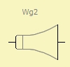

Waveguide
| Home | LE-Part | Acoustic |
 |
 |
 |
 |
.jpg) |
 |
 |
The Waveguide component is similar to the Duct-component however the Waveguide features a slowly varying cross-section area. The Waveguide can be wired forward and in reverse. The model does not include any losses.
Parameters
| Caption | String | Name of component |
| Formula | String | Formula of parameters |
| Throat | Ref or size | Cross section size of throat |
| Mouth | Ref or size | Cross section size of mouth |
| Len | m | Length of waveguide |
| Vf | m^3 | Volume of compression chamber |
| T | Salmon factor |
Throat and Mouth
Parameters Throat and Mouth specify the cross-sectional area at the small and large parts, respectively. Regarding the cross-section only the fundamental mode is used, and, hence, the shape of the cross-section is ignored. However, for convenience, the input-form provides shape parameters such as the diameter or a reference to a BEM-component. Details are given at chapter Diaphragm Parameters.
Len
Parameter Len specifies the effective length of the waveguide. If not coupled to the BEM-Part end-correction can be applied in order to take into account radiation effects at the apertures. See at parameter Len of component Duct.
Vf
Often the Waveguide component is used for modeling the phase-plug channels or the horn of a compression driver. For convenience, the parameter Vf creates an acoustic compliance Ca = Vf/ρc2) of volume Vf at the throat.
T
T is the Salmon Factor, which controls the opening of the cross section area of the Waveguide:
| T = 0 | Catenoidal |
| T = 1 | Exponential |
| T → ∞ | Conical |
Horn Functions or Salmon Functions generate geometry for the one-dimensional waveguide model, as described at [22-24, 35]. The Horn Function provides the cross section area at a distance from the horn throat. It is assumed that the shape of the cross-section varies smoothly. The Horn Function is a combination of exponential functions: S(z) = Sth·(cosh(k0·z) + T·sinh(k0·z))2 with z coordinate along the axis of the horn. S(z) is the cross section area at position z. Sth is the cross-section area at the throat Sth = S(0). k0 is the horn-wave-number, which corresponds to the Horn Frequency (k0 = 2πf0/c). T is the Salmon Factor. The above equation can also be written as: S(z) = Sth·(t1·exp(k0·z) + t2·exp(-k0·z))2 with t1 = (1 + T)/2 and t2 = (1 - T)/2
The Horn Frequency f0 is a convenient parameter in the design process of horns. As can be seen from the curves of the radiation resistance, for exponential horns, the resistance rapidly becomes zero below f0. In an infinitely long horn, no more sound would be radiated below f0. In this case all the energy is used to move the air mass in the horn. f0 = c/(2π·L)·ln(γ) with γ = 1/(2·t1)·η·(1 + sqrt(1 - 4·t1·t2·η2)) and η = sqrt(Smo/Sth). with L length of horn, Sth and Smo cross section area of throat and mouth.
Catenoid (T=0) shapes are characterized by an extremely high
radiation resistance slightly above the Horn Frequency f0. They are typically used for
signal horns or sirens, whose fundamental tone is matched to the maximum of the
radiation resistance. Many wind instruments, for example trumpets, also have this
shape or are similar to it.
With T=0 the slope is zero at the throat and increases only slowly with progressing
axial distance. Eventually the cross section opens exponentially. At the mouth the
flare is identical to the horn with T=1.
If T=0 the horn formula simplifies to
S(z) = Sth·cosh2(k0·z) with
t1 = t2 = 1/2.
Exponential (T=1) shapes are most widely used for loudspeaker systems.
Not only because of the simple horn function, but also because of good radiation
loading and at the same time, smaller dimensions compared with other shapes.
If T=1, the radiation resistance curve would be maximally flat in the ideal case of an
infinite long horn.
With T=1 the horn function simplifies to
S(z) = Sth·exp(2·k0·z)
with t1 = t2 = 0.
The Horn Frequency is f0 = c/(2π·L)·ln(η) with
η = sqrt(Smo/Sth).
Note, that only the exponential horn with T=1 is "continuous" or "extendable".
You can attach adaptors at either end without changing the horn-function.
The attachments should have same k0 and T.
Conical (T → ∞) shapes are the simplest ones. The cross-section
area increases linearly. The horn function simplifies to:
S(z) = Sth·(z/z0 + 1)2 with
z0 distance from cone tip to horn throat.
The transition from the general horn equation to this shape is achieved by setting
k0 = 0. This means, conical horns have no Horn Frequency.
For a radiating waveguide, the radiation impedance is similar to the
direct radiating diaphragm. Because a horn cannot be infinitely long there
is usually a sharp step of slope at the mouth, which often yields undesirable
reflections.
Waveguides with the conical profile are practical in modeling transitions
between ducts, or can be used to approximate phase-plugs in the
compression driver and so on.